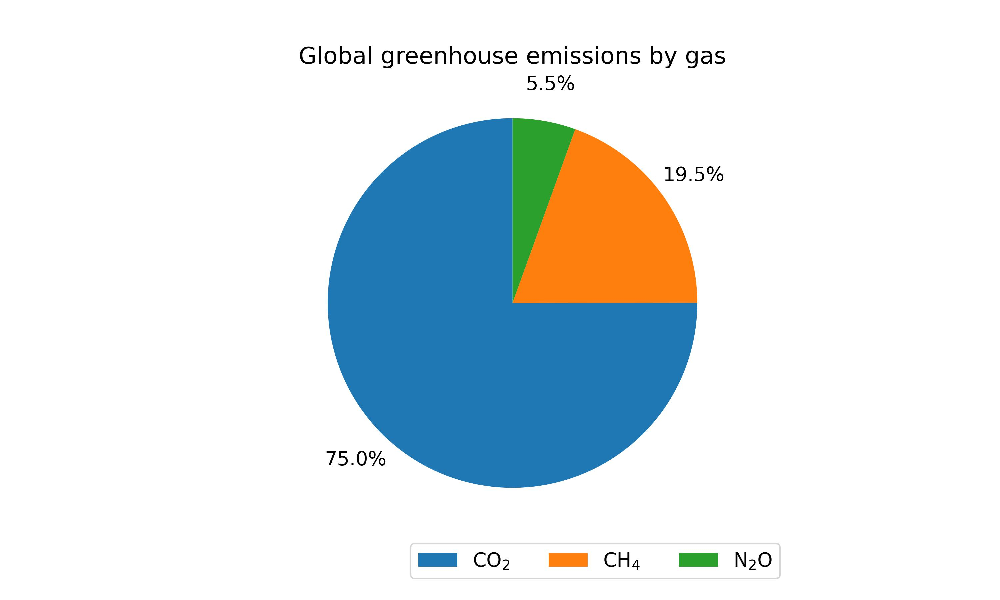
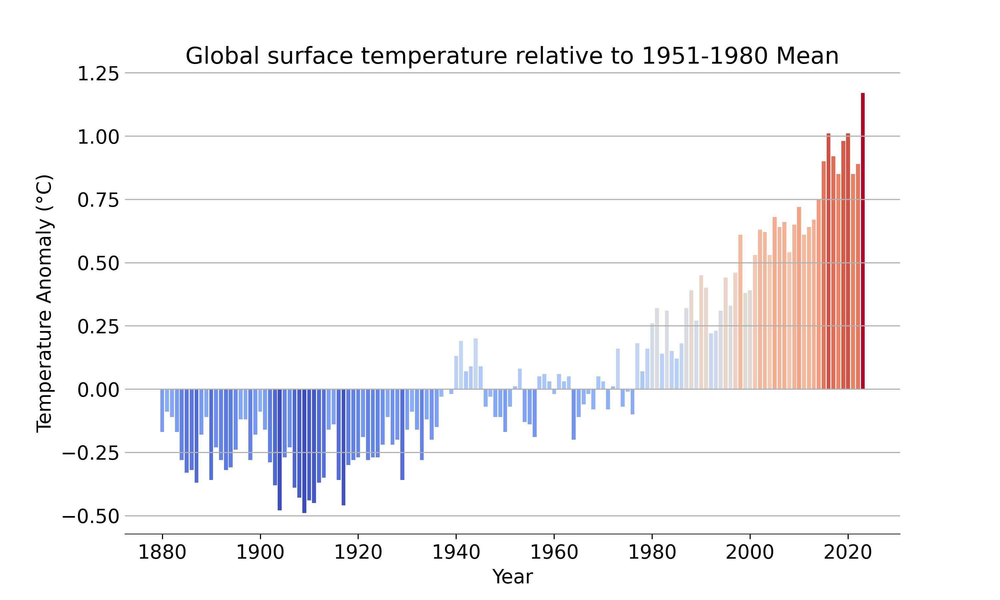

Climate change refers to long-term changes in the average weather patterns and temperatures on Earth. It is primarily caused by human activities, particularly the burning of fossil fuels (like coal, oil, and natural gas), deforestation, and industrial processes, which release greenhouse gases such as carbon dioxide (CO2), methane (CH4), and nitrous oxide (N2O) into the atmosphere.
These gases trap heat from the sun, leading to the "greenhouse effect," which causes global temperatures to rise. This warming impacts weather patterns, sea levels, and ecosystems. Some of the consequences include:
The Beginning: A Quiet World (1850s - early 1900s)
In the mid-19th century, GHG emissions were close to zero as industries were just starting to grow. The atmosphere was relatively clean, with minimal pollution from human activities.
Global greenhouse gas emissions are the primary drivers of climate change, resulting from human activities like burning fossil fuels (coal, oil, and gas), industrial processes, agriculture, and deforestation. These activities release large amounts of gases, particularly carbon dioxide (CO2), methane (CH4), and nitrous oxide (N2O), which trap heat in the Earth's atmosphere and create the "greenhouse effect." As emissions continue to rise, global temperatures increase, leading to more extreme weather events, rising sea levels, and disruptions in ecosystems.
Addressing these emissions requires a shift to cleaner energy, more efficient resource use, and sustainable practices across industries and agriculture. Reducing global emissions is key to limiting the harmful impacts of climate change. In the late 1800s, the global temperature was generally below the baseline, represented by the blue bars. Each year between 1880 and around the 1930s had temperatures that were cooler than this average, often by about 0.25°C or more. These blue bars reflect a cooler Earth, possibly because of natural climate cycles, volcanic eruptions, or lower levels of industrial activity.
In the 1960s and 1970s, the blue bars indicate that temperatures were generally cooler than the baseline, while CO₂ levels were around 320-340 parts per million (ppm). As CO₂ emissions rose, the temperature anomaly also began to increase slowly, with the bars shifting from blue to light red by the late 1980s.
Slow and Steady Growth (1900s - 1950s)
The early 20th century saw gradual industrialization, leading to a slow increase in GHG emissions. As factories, trains, and cars became more common, pollution levels began to rise.
Post-War Boom: An Industrial Surge (1950s - 1975)
After World War II, industrial activities expanded rapidly, causing a steep rise in emissions. This period marked the shift to large-scale production and increased use of fossil fuels like oil.
The Modern Era: A Skyrocketing Rise (1975 - 2000)
During the late 20th century, emissions skyrocketed as global industrialization and urbanization reached new heights. The rapid economic growth led to massive increases in GHG levels worldwide.
Recent Years: A Persistent High (2000 - 2025)
In the 21st century, GHG emissions remain high despite global efforts to curb them. Small fluctuations reflect attempts to reduce emissions, but overall levels stay around 50 gigatons annually.
Global Greenhouse Emissions By Gas

Global Surface Temperature
As we move through the early 20th century, the temperatures slowly rise toward the baseline, meaning that the Earth’s surface was warming. By the 1980s, the bars start to change from blue to light red, which signals that the global temperatures were starting to go above the historical average.
Then, a dramatic change happens. From the 1980s to the 2020s, the bars become darker and darker shades of red, growing taller and indicating a sharp rise in global temperatures. By the 2000s, the warming trend accelerates even more, leading to the hottest temperatures recorded in this graph’s final years. The dark red bars represent an anomaly, where the temperature has risen by more than 1°C above the average from 1951-1980, a sign of rapid global warming.
This trend of rising temperatures in the recent decades aligns with the increase in greenhouse gas emissions, especially carbon dioxide, from human activities like burning fossil fuels and deforestation. The story in this graph is one of a rapidly warming planet, with a sharp shift toward higher temperatures that pose growing risks to ecosystems, weather patterns, and human societies worldwide.


Global Temperature Anomaly and Atmospheric CO2 Emissions Concentrarion
Starting in the 1990s, the CO₂ line climbs rapidly past 360 ppm, and the temperature bars become darker red, showing accelerated global warming. The trend continues through the 2000s and 2010s, with CO₂ reaching over 400 ppm and temperatures rising sharply above the historical average.
By 2023, the CO₂ concentration exceeds 420 ppm, and global temperatures are about 1°C higher than the 1951-1980 average. This clear link between increasing CO₂ emissions and rising temperatures highlights the growing impact of human activities on climate change.
This image makes the relationship between rising CO₂ levels and increasing global temperatures unmistakably clear. As human activities like burning fossil fuels pump more CO₂ into the atmosphere, it acts like a blanket, trapping heat and driving the planet's temperature higher and higher. This visual story warns of the accelerating pace of climate change, with both CO₂ concentrations and global warming rising hand-in-hand over time.
Have the policies that governments have implemented really worked? The short answer is, to some extent, and we need to do MORE!!! The background image that you are seeing in this section is of Antarctica, and as you can see, the ice sheets are rapidly melting. This is one of the most visible signs of how our planet is responding to rising global temperatures, largely driven by greenhouse gas emissions, particularly CO₂.
As industries burn fossil fuels for energy, these gases accumulate, creating a heat-trapping "blanket" around the planet. This warming not only melts polar ice but also fuels extreme weather events, rising sea levels, and impacts ecosystems across the globe. Though some efforts have been made by governments to reduce emissions, the pace of climate change is still outstripping the actions taken, leaving us with an urgent need for more comprehensive solutions.
To tackle this crisis, we must:
parts per million
since 1880
percent per decade
millimeters per year